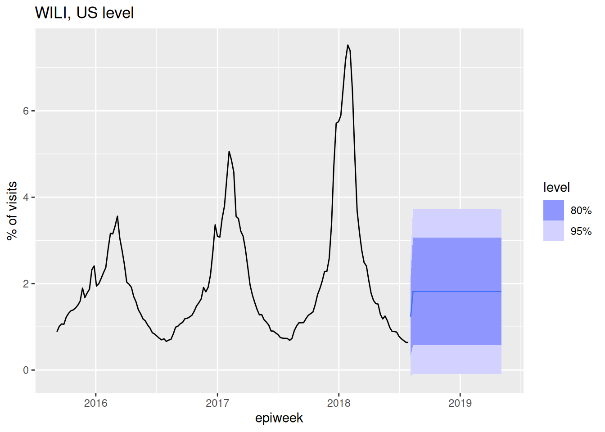
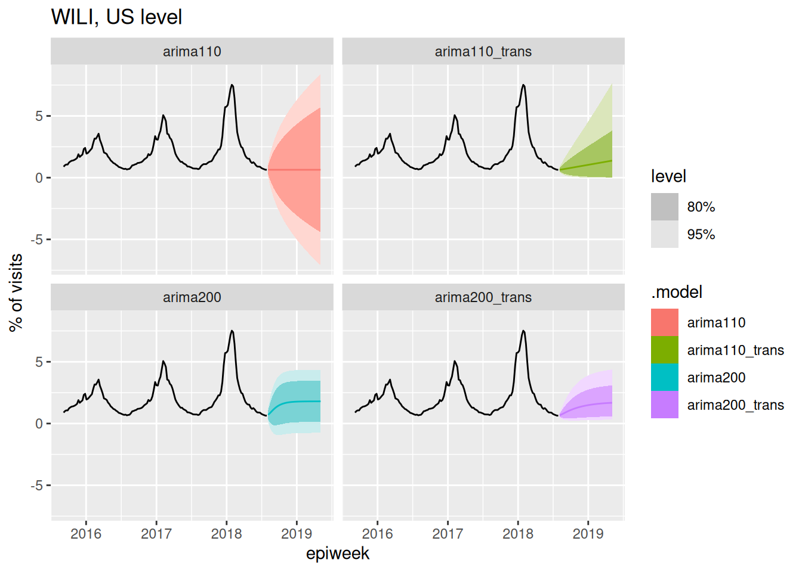
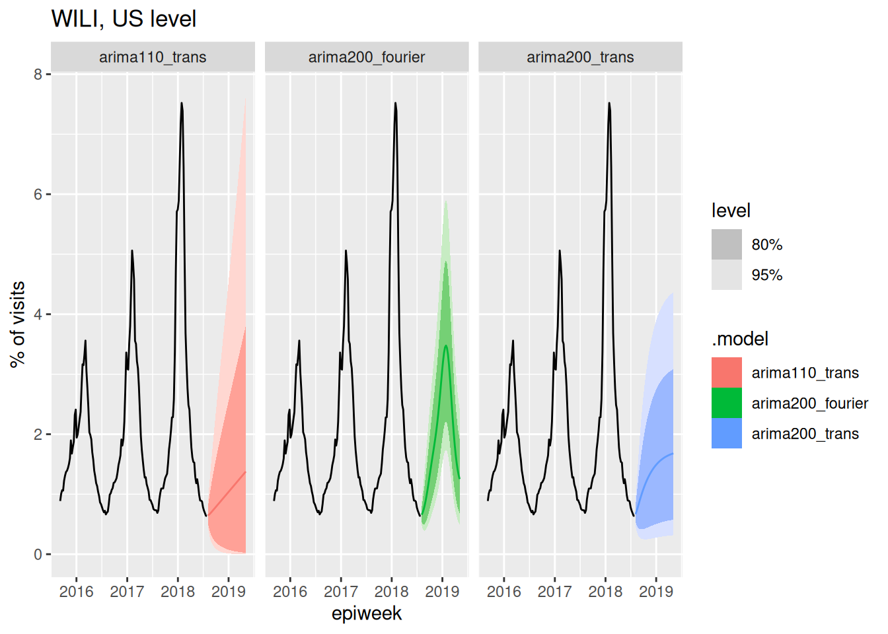

library("nfidd")
library("fable")
library("dplyr")
library("tidyr")
library("ggplot2")
library("epidatr")Improving forecasting models
Introduction
Learning how to look at time-series data and identify features that might make a particular dataset easier or harder to predict is a skill that takes time to get good at. It is a common pitfall to just start throwing models at data, without really looking at the data themselves, or making detailed comparisons of forecasts to observations.
Slides
Objectives
The goal of this session is to start to introduce you in a bit more depth to the ARIMA modeling framework, and to some important forecasting practices. We will focus on learning how to look at data, transformations and summaries of time-series data, and forecasts, to infer what kinds of model structures will help improve predictions.
Caution
None of the models introduced in this section are designed for real-world use!
Setup
Source file
The source file of this session is located at sessions/forecasting-models.qmd.
Libraries used
In this session we will use nfidd package for some flu data, the fable package to fit and forecast ARIMA models, the dplyr and tidyr packages for data wrangling, ggplot2 library for plotting, and the epidatr package for loading epidemiological data.
Tip
The best way to interact with the material is via the Visual Editor of RStudio.
Initialisation
We set a random seed for reproducibility. Setting this ensures that you should get exactly the same results on your computer as we do.
set.seed(123)Looking carefully at the data
Let’s define some mathematical notation that we will continue to use throughout the forecasting sessions in this class. We define \(y_t\) as the observed signal of interest at time \(t\). For the example we have looked at this is the weighted ILI proportion for the US in week \(t\).
What are “lags” in time-series data?
In forecasting, since we are using prior observations to predict future ones, having some notation and terminology for and functions to refer to the previous observations will be useful.
We sometimes talk about the “lagged” values of a time-series. This is a short-hand way to refer to values of the time-series some steps back in time from the current value. So the value \(y_{t-3}\) is referred to as the “lag-three” value of \(y_t\).
In R, you can access these values of a vector using the dplyr::lag() function. (Note: there is also a stats::lag() function that handles lags a little bit differently.)
We start by loading in the same dataset that we looked at in the previous session.
data(flu_data)ACF plots
We will now use the function gg_tsdisplay() from the feasts R package to give a unique view into our dataset.
feasts::gg_tsdisplay(flu_data, y = wili, plot_type='partial', lag_max = 104)In the above plot, the top panel shows the time-series. The lower left panel plots the auto-correlation function plotted for up to lag 104. It is commonly referred to as an ACF plot. Along the x-axis is the lag value and the y-axis is the correlation between \(y_t\) and \(y_{t-k}\) where \(k\) is the lag value. So for example, the vertical bar at x=1 is just less than one, which means that when we compute the correlation between \(y_t\) and \(y_{t-1}\) across our whole dataset, it is very high. We can do this explicitly here for comparison for lags 1 and 12:
cor(flu_data$wili, dplyr::lag(flu_data$wili, 1), use = "complete.obs")[1] 0.9633374cor(flu_data$wili, dplyr::lag(flu_data$wili, 12), use = "complete.obs")[1] -0.01203389By comparing these values computed directly here to the ACF plot above at lags of 1 and 12, you can see that the values are the same.
PACF plots
The lower right hand panel shows the partial auto-correlation function (PACF). The partial auto-correlation at lag \(k\) estimates the correlation between \(y_t\) and \(y_{t-k}\) after adjusting for the effects of lags 1, …, k-1. There are a lot of additional examples and explanation about interpreting ACF and PCF plots in FPP3, Chapter 9.5.
Take 5 minutes
What can you take away from the ACF and PCF plots of the data? (Same plot as above is reproduced here.)

Solution
The ACF plots show that there is a lot of correlation between lagged observations. For the first 10 or so lags, observations tend to be positively correlated and then after that, the correlations are periodic, with strong negative lags around every 25-26 weeks (~ 6 months) and strong positive lags every ~52 weeks/1 year. The correlations with the most recent 5-7 weeks of data are stronger than the correlations with the observations at the same time of year in the previous season.
The PCF plots show that once you adjust for the other timepoints, much of the correlation disappears. There do appear to be significant signals (both positive and negative) at lags 1 and 2 and at lags around 52 weeks. This suggests that we might want to consider a model that can see very recent lags as well as some annual periodicity or seasonality.
Some ARIMA model basics
We are not going to give an in-depth review of ARIMA models in this course, but we encourage you to check out the FPP3 Chapter on ARIMA models, which provides a very accessible introduction to the concepts and math behind this powerful modeling framework.
In general, there are three different knobs on ARIMA models that you can fiddle with. They are:
- the auto-regressive order: how many lags are included (\(p\))
- the differencing order: how many differences do you take of the data (\(d\))
- the moving-average order: how many residual errors are included as predictors (\(q\))
We will present briefly each of these pieces. But first, a brief detour to describe an important concept: stationarity.
What is stationarity?
A time-series is considered stationary if it does not have a clear trend or regular periodicity. More statistically speaking, the time-series is stationary if the expected value and variance of the time-series is the same for any window of time points selected. For ARIMA models to work well, ideally the time-series that is being modeled will be stationary. As we will see in this and later sessions, there are many different ways to try to make the time-series stationary.
A common trick to make a time-series stationary is to take “differences” of the observations. So rather than the time-series of interest being \(y_1, ..., y_t, ...\), you create a new set of observations \(z_t = y_t-y_{t-1}\). Oftentimes, even if \(y_t\) is not stationary, \(z_t\) will be. Sometimes a time-series may require two rounds of differencing or seasonal differencing (subtracting off the values from the previous season or two) to become stationary.
ARIMA model as a regression
An ARIMA model is specified as ARIMA(\(p\),\(d\),\(q\)), where, as defined above, the \(p\), \(d\), and \(q\) refer to the order of auto-regressive, differencing and moving-average terms. An ARIMA is a kind of regression model, with an outcome being predicted by a set of independent variables. We are going to fit a few overly simple ARIMA models below just to give examples of the math, the fitted values, and what the forecasts look like.
ARIMA(1,0,0)
Here is the equation for an ARIMA(1,0,0) model: \[ y_t = \mu_t + \phi_1 y_{t-1} + \varepsilon_t \] where \(\mu_t\) is a constant (like an intercept term in the regression), \(\phi_1\) is a coefficient for the auto-regressive term, and \(\varepsilon_t\) is a random error term with mean zero and constant variance. Note the constant variance assumption! This is one of the places where the stationarity assumption is comes into play: if the time-series is stationary then constant variance is a reasonable assumption.
Here is code to fit and forecast from an ARIMA(1,0,0) model (this is sometimes also referred to as an AR(1) model):
fit_arima100 <- flu_data |>
model(ARIMA(wili ~ pdq(1,0,0)))
report(fit_arima100)Series: wili
Model: ARIMA(1,0,0) w/ mean
Coefficients:
ar1 constant
0.9633 0.0638
s.e. 0.0094 0.0121
sigma^2 estimated as 0.1219: log likelihood=-286.2
AIC=578.41 AICc=578.44 BIC=592.38forecast(fit_arima100, h=40) |>
autoplot(flu_data |> filter(epiweek >= as.Date("2015-09-01"))) +
labs(title = "WILI, US level",
y="% of visits")ARIMA(1,1,0)
Here is an equation for an ARIMA(1,1,0) model: \[ y_t - y_{t-1} = \phi_1 (y_{t-1} - y_{t-2}) + \varepsilon_t.\] Another way to think about this is that we’ve just replaced the dependent outcome variable \(y_t\) with \(z_t\) as we defined above as the difference. Remember that the (1,1,0) part means that we have one auto-regressive term, one differencing and no moving average terms. Here is code to fit and forecast from this model:
fit_arima110 <- flu_data |>
model(ARIMA(wili ~ pdq(1,1,0)))
report(fit_arima110)Series: wili
Model: ARIMA(1,1,0)
Coefficients:
ar1
0.5349
s.e. 0.0302
sigma^2 estimated as 0.08845: log likelihood=-160.35
AIC=324.7 AICc=324.72 BIC=334.02forecast(fit_arima110, h=40) |>
autoplot(flu_data |> filter(epiweek >= as.Date("2015-09-01"))) +
labs(title = "WILI, US level",
y="% of visits")
Note that by default a model with \(d=1\) doesn’t include a constant term in the model.
ARIMA(0,0,1)
The auto-regressive and differencing knobs of ARIMA models are fairly easy to conceptualize, but the moving average part is a little bit trickier. Basically, a moving average model uses residuals from the previous timepoints as predictors in the model. This is actually a common technique in more modern-day machine learning approaches too: learn from your past errors/residuals to improve your model. Here is an example of an ARIMA(0,0,1) model in math terms:
\[ y_t = \mu + \varepsilon_t + \theta_1 \varepsilon_{t-1}.\] The key thing to note here is that \(\varepsilon_t\) is still the same error term as in the earlier equations but the \(\varepsilon_{t-1}\) term is included as a predictor in the model, with it’s own coefficient \(\theta_1\).
Don’t get confused by “moving average” terminology!
It is important to not get the “moving average” part of an ARIMA model confused with a models that smooth noisy data (like loess), which can sometimes also be referred to as “moving averages”. These are very different things!
Here is code to fit and forecast from the ARIMA(0,0,1 model):
fit_arima001 <- flu_data |>
model(ARIMA(wili ~ pdq(0,0,1)))
report(fit_arima001)Series: wili
Model: ARIMA(0,0,1) w/ mean
Coefficients:
ma1 constant
0.9380 1.8181
s.e. 0.0095 0.0491
sigma^2 estimated as 0.5024: log likelihood=-838.4
AIC=1682.81 AICc=1682.84 BIC=1696.78forecast(fit_arima001, h=40) |>
autoplot(flu_data |> filter(epiweek >= as.Date("2015-09-01"))) +
labs(title = "WILI, US level",
y="% of visits")
Take 5 minutes
Using the partial auto-correlation function plots as a guide, which lags might you consider including in the AR part of an ARIMA model?
Solution
Recall that the interpretation of the height of the line at \(x = k\) in the PACF plot is the correlation between \(y_t\) and \(y_{t-k}\) after adjusting for all other lags less than \(k\). This interpretation is similar to that of a multiple regression model, where a coefficient in a model captures the relationship between it and the outcome adjusting for other predictor variables. Therefore, the PACF plots can help identify which auto-regressive terms that might be appropriate for a model. In particular, we see strong PACF values for lags 1 and 2, a slightly “significant” but much smaller PACF value at lag 3 and then also some significant lags at around 52 weeks (exactly one year later). We will talk about adjusting for seasonalily later, but for now, it looks like including 2-3 auto-regressive lags in the model might be appropriate.
Fit a few targeted ARIMA models
Ok, let’s get back to looking at our data and figuring out what ARIMA models might be reasonable to choose here. There are lots of ways to reason your way into what kind of structure an ARIMA model should take. We are going to demonstrate one path.
Using data inspection to inform model choices
Let’s look at our data again.
feasts::gg_tsdisplay(flu_data, y = wili, plot_type='partial', lag_max = 104)
The time-series is clearly non-stationary, with a clear periodicity that depends on the week of the season. Let’s try first differencing and looking at the data again.
feasts::gg_tsdisplay(flu_data, y = difference(wili), plot_type='partial', lag_max = 104)It’s not stationary (there still are seasonal trends, we will do more to deal with this soon), but it’s at least a little bit better.
Based on this plot, let’s put on our list of candidate models to fit an ARIMA(1,1,0), because with one difference in the data we can see that the PACF shows a significant correlation at only a lag of 1 (and at some higher lags that we will ignore for now). Recall that in the last session we fit an ARIMA(2,0,0). We’re going to come up with a list of a few candidate models to fit and then fit them all at once.
One clear feature of the original (not differenced) data is that the variance is small during the summer months (the flu off-season) and very high during the peaks of the season. Let’s implement a transformation to try to get something closer to constant variance. Through a lot of experimentation, we’ve found that a fourth-root transformation often does a reasonable job at stabilizing variance.(Ray et al. 2025) And, it has the added benefit of making it so that predictions will never be negative. (Remember that problem from last session?) Other transformations might be reasonable too (there is a whole section on them in the FPP3 textbook), and this is something often worth doing a bit of exploration for with your particular dataset.
We’re going to use fable-specified standards to define two transformation functions
fourth_root <- function(x) x^0.25
inv_fourth_root <- function(x) x^4
my_fourth_root <- new_transformation(fourth_root, inv_fourth_root)And then we can plot the data using this transformation:
autoplot(flu_data, .vars = fourth_root(wili))It’s not perfect, but it’s better. We will include some fourth-root transformations in our next round of model fitting.
Fit models
Let’s fit four models total: ARIMA(2,0,0) and ARIMA(1,1,0), each with and without the fourth_root transformation.
fits <- flu_data |>
model(
arima200 = ARIMA(wili ~ pdq(2,0,0)),
arima110 = ARIMA(wili ~ pdq(1,1,0)),
arima200_trans = ARIMA(my_fourth_root(wili) ~ pdq(2,0,0)),
arima110_trans = ARIMA(my_fourth_root(wili) ~ pdq(1,1,0))
)
forecast(fits, h=40) |>
autoplot(flu_data |> filter(epiweek >= as.Date("2015-09-01"))) +
facet_wrap(~.model) +
labs(title = "WILI, US level",
y="% of visits")
The above plots show 40-week ahead forecasts from each of the four models.
Take 5 minutes
None of the forecasts above look great. But which of these models do you think is doing the most reasonable (or least unreasonable) things?
Solution
Once again, there is not exactly a “right” answer here, but here are a few things to consider:
- The fact that both of the
_transforecasts (the ones with the fourth-root transformation) stay positive seems pretty critical. The other forecasts routinely predict impossible values! - The
arima110_transmodel has quite high uncertainty at longer horizons in a way that seems reasonable.
Again, all of these forecasts are not very good, but they are progress.
Doing something about seasonality
The seasonality feature is a critical part of these data. Let’s do something to model it!
There is a whole part of ARIMA modeling that accounts for seasonality (they are called Seasonal ARIMA or SARIMA models). However, using seasonal ARIMA models with weekly data is complicated, because some years have 52 weeks and some have 53. Here are two relatively straight-forward ways that you could address this:
- Define a “season-year” where “week 1” is the start of each season (maybe the first week of September) and count to 52 from there. If there is a 53rd week, drop it. Model with a periodicity of 52.
- Include Fourier series terms (sums of sine and cosine terms with a fixed periodicity of 365 days) to fit annual periodic trends.
We’re going to try approach 2 because it’s a bit easier to get up and running in fable. You can read more about this approach in FPP3 Chapter 12.1. The model we will fit below will be an AR(2) model plus some harmonic terms. We can define it mathematically like this: \[ y_t = \phi_1 y_{t-1} + \phi_2 y_{t-2} + \sum_{k=1}^{3} \left[ \alpha_k \cos\left( \frac{2\pi \cdot k \cdot d(t)}{365} \right) + \beta_k \sin\left( \frac{2\pi \cdot k \cdot d(t)}{365} \right) \right] + \varepsilon_t \] where \(\alpha_k\) and \(\beta_k\) are the Fourier coefficients for the sine and cosine terms, and \(d(t)\) is a function that returns the integer day of the year representing the first day of week \(t\). The coefficients scale up and down the sine and cosine waves. Different linear combinations of sine and cosine waves of these varying frequencies can be constructed to make many smooth shapes. The number of sine and cosine terms chosen here (\(k=3\)) is arbitrary, and this could be adjusted or other values tried out.
Note that you can just add a fourier() term to your model equation and this will add the Fourier Series terms shown in the equation above to the model predictors. Here is the new fitted set of models, using just the transformed data, and only using the Fourier Series on the undifferenced data, since we are assuming that this periodic function will model the stationarity directly.
fits <- flu_data |>
model(
arima200_trans = ARIMA(my_fourth_root(wili) ~ pdq(2,0,0)),
arima110_trans = ARIMA(my_fourth_root(wili) ~ pdq(1,1,0)),
arima200_fourier = ARIMA(my_fourth_root(wili) ~ pdq(2,0,0) + fourier(period = "year", K=3)))
forecast(fits, h=40) |>
autoplot(flu_data |> filter(epiweek >= as.Date("2015-09-01"))) +
facet_wrap(~.model) +
labs(title = "WILI, US level",
y="% of visits")
Well, that arima200_fourier model can likely be improved, but we have finally arrived at a forecast model that at least passes a visual sanity check, in the sense that it captures the seasonality that we know is present in the data. In the next session, we will start to think about how these different models and forecasts can be evaluated carefully.
End-of-session reflection: Bayesian vs. Frequentist modeling
The statistical models we’ve discussed in this session represent just a subset of available forecasting approaches. These models offer a different workflow for thinking about modeling than the generative models from the nowcasting sessions in the first day of the course. Whilst Bayesian approaches work forward from domain knowledge to specify data-generating processes, traditional time series methods such as these ARIMA models work backward from observed patterns using standard toolkits (transformations, differencing, residual analysis) to achieve stationarity and improve predictions. Both approaches ultimately aim to capture the same underlying data-generating process but from different perspectives. Something to think about!
Going further
- Read about ARIMA models in the FPP3 textbook. Try to develop a better understanding of how \(p\), \(d\), and \(q\) impact the behavior of a time-series.
Wrap up
- Review what you’ve learned in this session with the learning objectives
- Share your questions and thoughts
References
Ray, Evan L., Yijin Wang, Russell D. Wolfinger, and Nicholas G. Reich. 2025. “Flusion: Integrating Multiple Data Sources for Accurate Influenza Predictions.” Epidemics 50 (March): 100810. https://doi.org/10.1016/j.epidem.2024.100810.